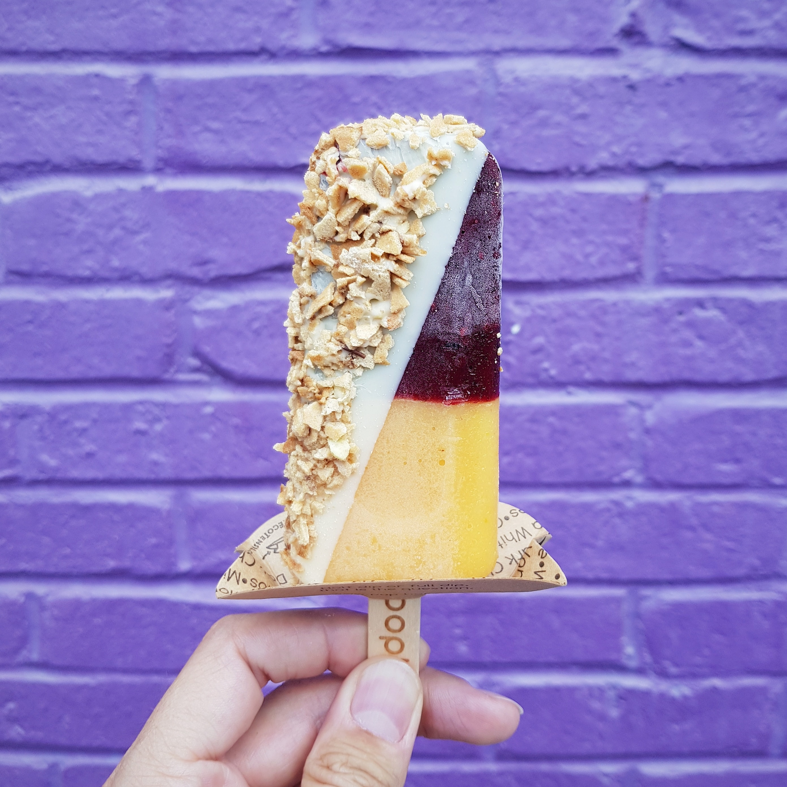
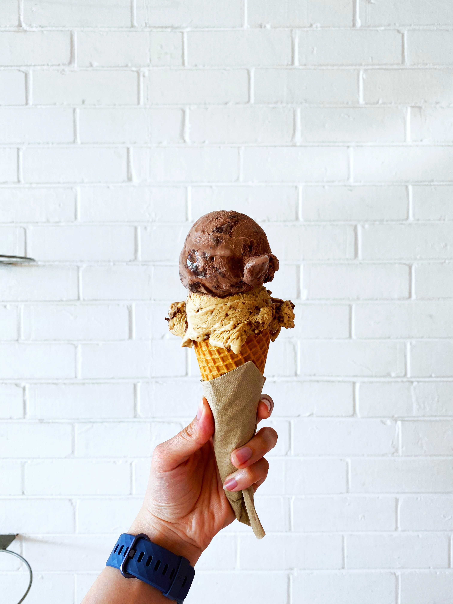

O sorvete é indicado para diversas situações além das tardes ensolaradas, como para crianças em fase de crescimento – já que proporciona diversos nutrientes e é uma fonte de energia. Também é uma solução para pós-operatórios. Por ser gelado, o sorvete conta com propriedades analgésicas, evita hemorragias e náuseas.

paletas

Shakes

Massas

Picolés

Taça
